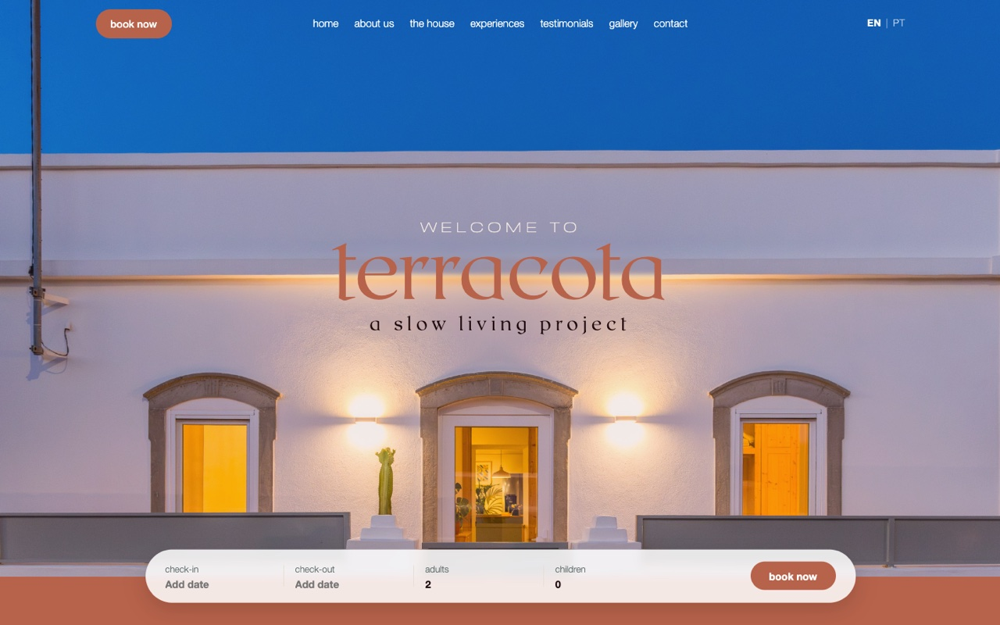
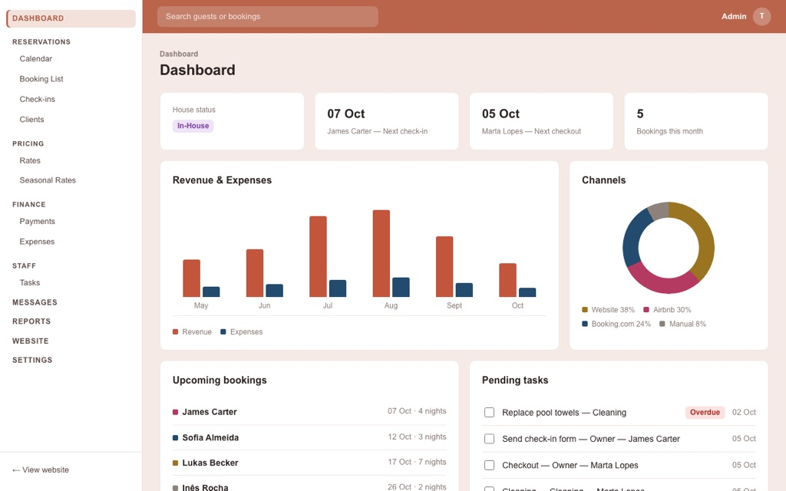
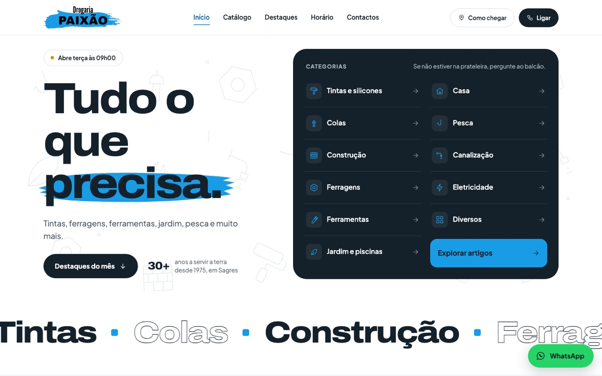
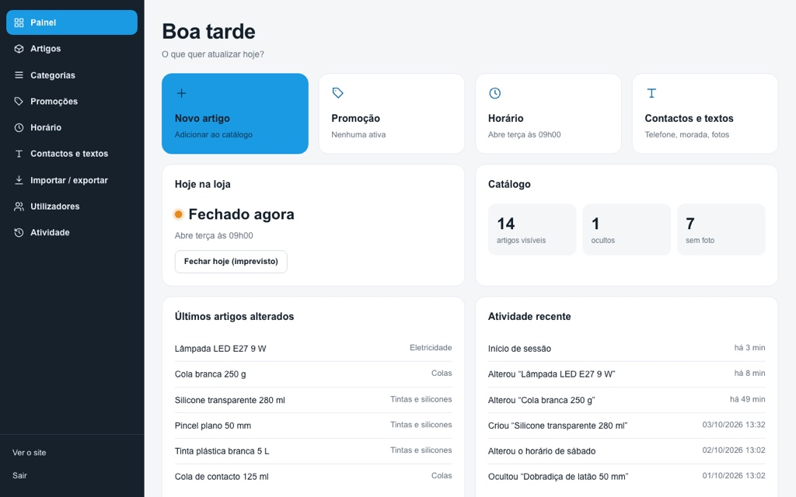
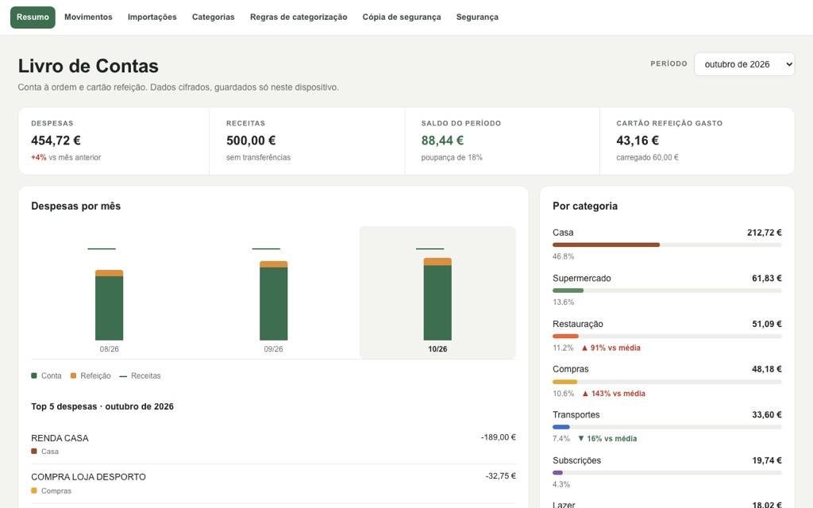

Websites
Sites institucionais, landing pages e portfolios modernos, rápidos e pensados para converter visitas em contactos.
Olá, sou a Catarina Paixão
Crio websites e plataformas digitais de gestão de negócio, com reporting e gestão operacional, para que vejas tudo o que importa num só sítio.
Sobre mim
Sou a Catarina Paixão, tenho 24 anos e trabalho na área comercial da indústria há 2 anos, onde passo os dias entre dados, relatórios e decisões de negócio. Foi desse lado analítico que nasceu o meu interesse por criar websites - simples, bem pensados e, acima de tudo, úteis. Gosto de perceber como as coisas funcionam, encontrar o que pode ser melhorado e transformar essa ideia numa experiência digital clara e cuidada. Por isso, crio os meus projetos de raiz, juntando design, desenvolvimento e uma visão orientada para resultados.
Menos complicação. Mais clareza. Sites feitos para funcionar.
Serviços
Uma presença online que atrai clientes e uma plataforma que te ajuda a gerir o negócio por dentro.
Sites institucionais, landing pages e portfolios modernos, rápidos e pensados para converter visitas em contactos.
Ferramentas à medida para a gestão operacional: encomendas, clientes, stock, equipa e tarefas num só sistema.
Relatórios e indicadores que se atualizam sozinhos, para saberes como está o negócio sem abrir folhas de cálculo.
Projetos

Site de um Alojamento local no Algarve, com reservas diretas.
↔ Ligado à plataforma de gestão
Experimentar demoReservas, preços, pagamentos e tarefas da equipa num só sítio.
↔ Ligada ao website
Catálogo de artigos, destaques do mês e horário da loja.
↔ Ligado à plataforma de gestão
Experimentar demoArtigos, promoções e horário da loja, geridos pelos donos.
↔ Ligada ao website
Experimentar demoImporta extratos bancários, organiza os movimentos por categoria e mostra para onde vai o dinheiro, mês a mês.
Processo
Cada projeto segue os mesmos quatro passos, para saberes sempre em que ponto estamos.
Percebo o que precisas, para quem é e qual o objetivo.
Envio âmbito, prazo e orçamento por escrito.
Partilho versões pelo caminho para ajustarmos juntos.
Ponho o projeto no ar e explico como o manter.
Depende do que precisas: o número de páginas, as funcionalidades e se inclui uma plataforma de gestão. Depois de uma conversa rápida, envio-te um orçamento sem compromisso.
Depende da complexidade e do nível de personalização. Pode variar, entre duas semanas e dois meses. O prazo fica sempre definido na proposta.
Já fiz plataformas para gerir reservas, catálogos de produtos, horários, pagamentos e tarefas de equipa. Mas cada negócio é diferente, por isso começo sempre por perceber o que precisas de ver e controlar.
Sim. Cada plataforma é feita à medida, a partir da forma como já trabalhas, e não o contrário.
Sim, e os moldes combinam-se contigo. Ainda assim, tudo é pensado para que consigas tratar do dia a dia sozinho e só precises de mim para mudanças maiores.
Contacto
Conta-me o que tens em mente ou deixa só uma pergunta. Respondo assim que possível.